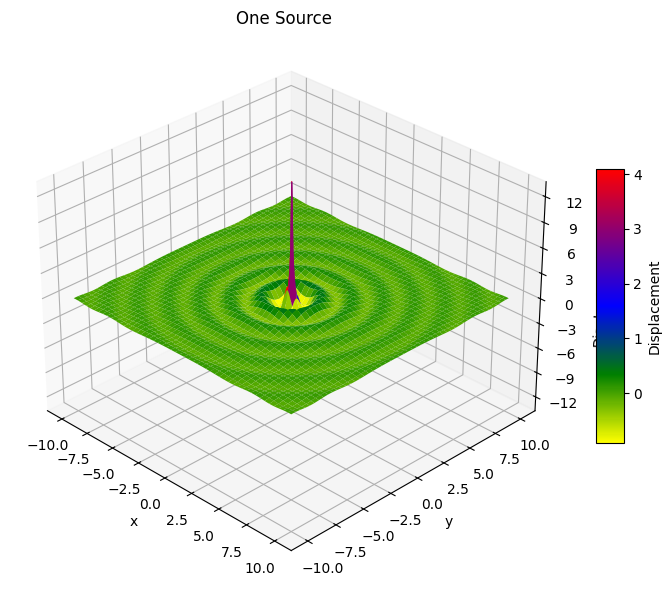
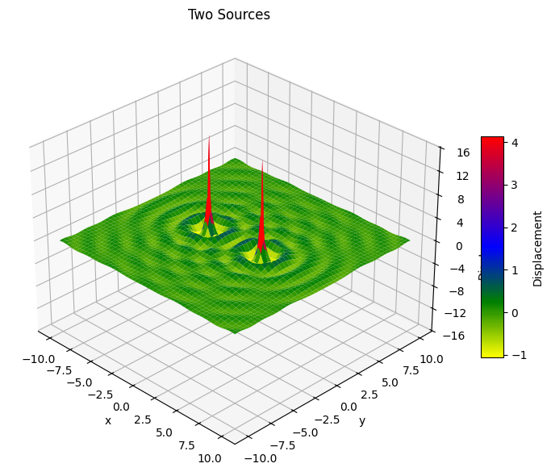
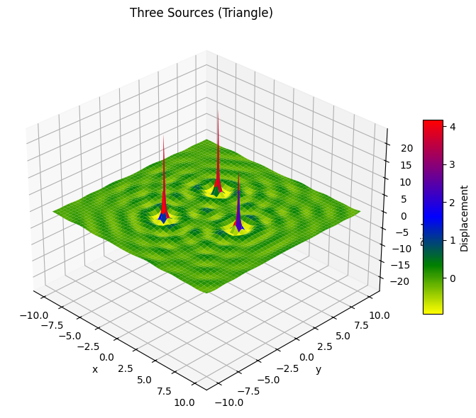
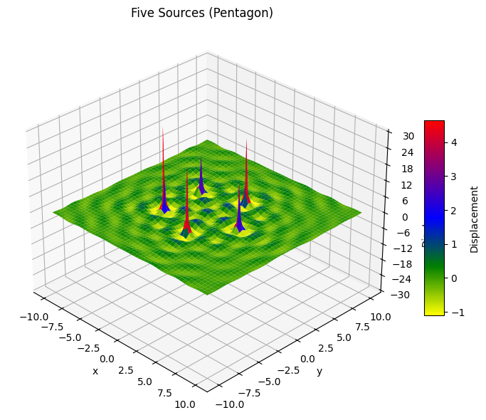
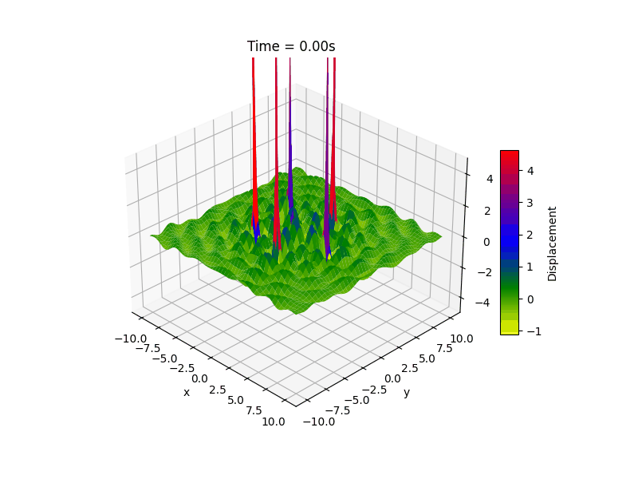

Problem 1: Interference Patterns on a Water Surface
Motivation
Interference is a fundamental concept in wave physics, describing how two or more waves overlap and interact with each other. On a water surface, interference is visually striking: when ripples from different sources meet, they form patterns of alternating wave crests and troughs. These patterns demonstrate how wave amplitudes add together—either reinforcing each other (constructive interference) or canceling each other out (destructive interference).
Studying such interactions helps us build intuition about key wave principles like coherence, phase difference, and spatial geometry. It also offers a real-world demonstration of superposition, a principle that applies not just to water waves, but also to sound, light, and quantum wave functions. This problem uses a regular geometric setup to explore how the arrangement of wave sources affects the resulting interference pattern.
Task Overview
We analyze the interference pattern created on a water surface by placing wave-emitting point sources at the vertices of a regular polygon. Each source generates circular waves outward from its position. The total disturbance at any point on the water is determined by adding the contributions from all sources.
Mathematical Background
The disturbance from a single point source is modeled by the following equation:
Where:
- \(\eta(x, y, t)\): vertical displacement of the water at point \((x, y)\) and time \(t\)
- \(A\): amplitude of the wave
- \(k = \frac{2\pi}{\lambda}\): wave number (dependent on the wavelength \(\lambda\))
- \(\omega = 2\pi f\): angular frequency (dependent on the wave frequency \(f\))
- \(r = \sqrt{(x - x_0)^2 + (y - y_0)^2}\): distance from the source point \((x_0, y_0)\) to point \((x, y)\)
- \(\phi\): initial phase (same for all sources in this case)
For multiple sources, we apply the principle of superposition:
Where \(N\) is the number of wave sources (equal to the number of polygon vertices).
Geometry of the Setup
For this analysis, we consider a regular polygon—meaning all sides and angles are equal. Some example configurations:
- Equilateral Triangle (3 sides)
- Square (4 sides)
- Regular Pentagon (5 sides)
The sources are placed at equal distances from a central point, arranged in a circular formation. This symmetry makes the resulting interference patterns more structured and easier to analyze.
Interference Pattern Analysis
Constructive Interference
This occurs when waves arrive in phase at the same location—meaning their crests align, resulting in a larger amplitude. In the case of symmetric polygonal arrangements, regions of constructive interference form where distances from the different sources are such that the path difference corresponds to whole-number multiples of the wavelength.
Destructive Interference
This happens when waves arrive out of phase—where crests meet troughs—leading to cancellation. In symmetrical setups, nodes of destructive interference appear as a repeating grid or ring structure, depending on the polygon.
Interference Zone Characteristics
-
Triangle: The interference pattern forms threefold symmetry, with curved lines radiating outwards and intersecting in complex ways. Constructive nodes form along radial lines corresponding to the triangle’s axes.
-
Square: The pattern shows fourfold symmetry, with more regular, grid-like regions of constructive and destructive interference due to the right angles in the geometry.
-
Pentagon: The pattern becomes more intricate. Fivefold symmetry creates a star-like interference pattern in the center, with rings and nodes forming at complex intersections.
Each polygon creates a unique interference pattern based on its rotational symmetry. As the number of sources increases, the central interference structure becomes more detailed and sharply defined.
Conclusions
The interference patterns generated by multiple point sources depend strongly on their spatial arrangement. Regular polygons offer a controlled way to observe the impact of geometry on wave behavior.
- Symmetry in the source layout leads to symmetry in interference patterns.
- Constructive and destructive interference regions form predictable geometrical shapes, particularly near the center of the polygon.
- These patterns can help in understanding more advanced concepts in physics, such as diffraction, wavefronts, and coherence.
This analysis reinforces the concept of superposition and highlights the beauty and complexity of wave interactions in two dimensions.




